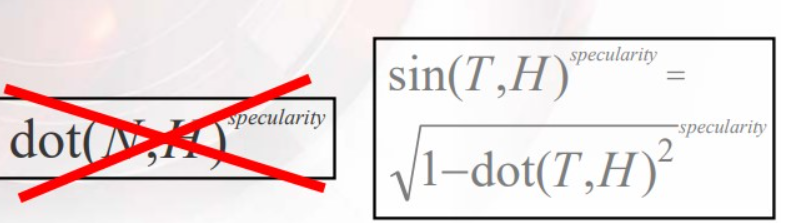

2020/07/08
qiutang
原理
丝绸、头发这些各项异性材质，它们的高光部分计算使用的是各向异性方式。当然实时渲染里不可能像离线渲染里那样去积分计算，游戏中大部分都是用切线代替法线来近似计算各向异性高光。
然后高光的计算方式主要有三种，一个是Kaijya-Kay模型，它主要用在头发高光计算上。
Kaijya-Kay的高光计算方式：

它不再使用法线点积半角向量了，而是直接使用切线向量与半角向量的夹角的余弦值作为高光系数。

于是，当半角向量H与切线方向T夹角在[0,90°]时，按照正弦函数，夹角越小，得到的高光系数越小，然后幂乘后得到的高光值越小，然后当视线在发丝的落点沿着切线方向向发根平移时，H与T的夹角将会变大，高光值将会渐渐增大，从而形成头发顶部高光的感觉。
当然现在没有头发高光流动的感觉，为了模拟高光流动，它将切线沿着法线方向作偏移。

也就是这样：
half3 ShiftedTangent(float3 t, float3 n, float shift) {
return normalize(t + shift * n);
}
然后这个shift值一般采样一个偏移量灰度图：

这种灰度图可以在PS里用一个白噪声 + v方向的运动模糊生成。
当前shift值是[0,1]范围，将它作如下处理，使得高光可以随机向上向下流动:
float shift = tex2D(shitTex,uv).x - 0.5f;
最后是高光计算：
// T 为发丝切线方向，V为视线方向，L为灯光方向，exponent为高光幂指数
float StrandSpecular(float3 T, float3 V, float3 L, int exponent)
{
float3 H = normalize(L + V);
float dotTH = dot(T, H);
float sinTH = sqrt(1.0 - dotTH * dotTH);
float dirAtten = smoothstep(-1, 0, dotTH);
return dirAtten * pow(sinTH, exponent);
}
这里的dirAtten主要是处理T与H夹角余弦落在[-1,0]之间，给一个高光值的衰减，处理视角向量与发丝切线接近重合时高光值异常问题。可以把它去掉来做一次比较，发现有方向衰减和没方向衰减的高光差异极大。
另外高光计算方式可以换成GGX各向异性法线函数，或者是Ward各向异性函数法线函数，它们和Kaijya-Kay类似，只不过Kaijya-Kay为了实现向上向下两层高光偏移，需要计算两次高光：
float shift1 = tex2D(shitTex,uv).x * _flatshift + _SpecShift;
float shift2 = tex2D(shitTex,uv).x * _flatshift + _SpecShift + _SpecShift2;
float3 T1 = ShiftTangent( tan , Wnormal , shift1);
float3 T2 = ShiftTangent( tan , Wnormal , shift2);
float3 spec1 = StrandSpecular(T1,...) * _SpecColor * _AnisoSpecular;
float3 spec2 = StrandSpecular(T2,...) * _SpecColor2 * _AnisoSpecular * 0.6;
float3 spec = spec1+spec2;
这是很耗费性能的，因为使用了幂乘，而且有时候会为了压制高光的强度把幂乘指数调得很高，还算了两次。
Kaijya-Kay整体的着色器如下，注意它的漫反射着色使用插值的Normal dot Light：
float4 HairLighting (float3 tangent, float3 normal, float3 lightVec,
float3 viewVec, float2 uv, float ambOcc)
{
// shift tangents
float shiftTex = tex2D(tSpecShift, uv) - 0.5;
float3 t1 = ShiftTangent(tangent, normal, primaryShift + shiftTex);
float3 t2 = ShiftTangent(tangent, normal, secondaryShift + shiftTex);
// diffuse lighting
float3 diffuse = saturate(lerp(0.25, 1.0, dot(normal, lightVec)));
// specular lighting
float3 specular = specularColor1 * StrandSpecular(t1, viewVec, lightVec, specExp1);
// add second specular term
float specMask = tex2D(tSpecMask, uv);
specular += specularColor2 * specMask * StrandSpecular(t2, viewVec, lightVec, specExp2);
// Final color
float4 o;
o.rgb = (diffuse + specular) * tex2D(tBase, uv) * lightColor;
o.rgb *= ambOcc;
o.a = tex2D(tAlpha, uv);
return o;
}
相比之下，GGX各向异性比较省性能，它的计算方式直接传入X，Y方向的粗糙度值，高光计算一次算完，而且最重要的是没有幂乘，性能卓越：
float D_GGXaniso( float RoughnessX,float RoughnessY,float NoH,float3 H, float3 X, float3 Y)
{
float ax = RoughnessX * RoughnessX;
float ay = RoughnessY * RoughnessY;
float XoH = dot( X, H );
float YoH = dot( Y, H );
float d = XoH*XoH / (ax*ax) + YoH*YoH / (ay*ay) + NoH*NoH;
return 1 / ( pi * ax*ay * d*d );
}
而Ward各向异性函数法线函数，大同小异：
float sqr(float x) {
return x * x;
}
float WardAnisotropicNormalDistribution(float anisotropic, float NdotL, float NdotV,
float NdotH, float HdotX, float HdotY)
{
float aspect = sqrt(1.0h - anisotropic * 0.9h);
float roughnessSqr = (1 - 0.5);
roughnessSqr *= roughnessSqr;
float X = roughnessSqr / aspect;
float Y = roughnessSqr * aspect;
float exponent = -(sqr(HdotX / X) + sqr(HdotY / Y)) / sqr(NdotH);
float Distribution = 1.0 / (4.0 * 3.14159265 * X * Y * sqrt(NdotL * NdotV));
Distribution *= exp(exponent);
return Distribution;
}
高光部分算完之后，直接叠加一个漫反射光就行了，使用普通的兰伯特模型就能得到不错的漫反射结果了，然后丝绸渲染往往会有一个色调映射，加一个颜色的lerp来统一最终的色调。
以上这些基本就是全部的原理。
美术制作注意事项
然后才是最重要的美术制作环节。
各向异性材质计算使用到了切线和副切线，而切线的方向对应模型的uv的u方向，副切线方向对应模型UV的V方向，切线算法有mikktspace和经典的xNormal等，比较简单的切线与副切线的计算方法如下,来自gamedev论坛的回答：

其中： E1 = (u1-u0)T + (v1-v0)B
E2 = (u2-u0)T + (v2-v0)B
两个等式，两个未知量，因此：
| E1x E1y E1z | | deltaU1 deltaV1 | * | Tx Ty Tz |
| E2x E2y E2z | = | deltaU2 deltaV2 | | Bx By Bz |
转化为C++代码:
struct Triangle
{
unsigned short index[3];
};
void CalculateTangentArray(long vertexCount, const Point3D *vertex, const Vector3D *normal,
const Point2D *texcoord, long triangleCount, const Triangle *triangle, Vector4D *tangent)
{
Vector3D *tan1 = new Vector3D[vertexCount * 2];
Vector3D *tan2 = tan1 + vertexCount;
ZeroMemory(tan1, vertexCount * sizeof(Vector3D) * 2);
for (long a = 0; a < triangleCount; a++)
{
long i1 = triangle->index[0];
long i2 = triangle->index[1];
long i3 = triangle->index[2];
const Point3D& v1 = vertex[i1];
const Point3D& v2 = vertex[i2];
const Point3D& v3 = vertex[i3];
const Point2D& w1 = texcoord[i1];
const Point2D& w2 = texcoord[i2];
const Point2D& w3 = texcoord[i3];
float x1 = v2.x - v1.x;
float x2 = v3.x - v1.x;
float y1 = v2.y - v1.y;
float y2 = v3.y - v1.y;
float z1 = v2.z - v1.z;
float z2 = v3.z - v1.z;
float s1 = w2.x - w1.x;
float s2 = w3.x - w1.x;
float t1 = w2.y - w1.y;
float t2 = w3.y - w1.y;
float r = 1.0F / (s1 * t2 - s2 * t1);
Vector3D sdir((t2 * x1 - t1 * x2) * r, (t2 * y1 - t1 * y2) * r,
(t2 * z1 - t1 * z2) * r);
Vector3D tdir((s1 * x2 - s2 * x1) * r, (s1 * y2 - s2 * y1) * r,
(s1 * z2 - s2 * z1) * r);
tan1[i1] += sdir;
tan1[i2] += sdir;
tan1[i3] += sdir;
tan2[i1] += tdir;
tan2[i2] += tdir;
tan2[i3] += tdir;
triangle++;
}
for (long a = 0; a < vertexCount; a++)
{
const Vector3D& n = normal[a];
const Vector3D& t = tan1[a];
// Gram-Schmidt orthogonalize
tangent[a] = (t - n * Dot(n, t)).Normalize();
// Calculate handedness
tangent[a].w = (Dot(Cross(n, t), tan2[a]) < 0.0F) ? -1.0F : 1.0F;
}
delete[] tan1;
}
总结切线/副切线的主要计算步骤如下：
1. 遍历所有三角形顶点，每个顶点算一次切线t1 和副切线t2，然后累加存储起来。
2. Gram-Schmidt方法构造render space（local space）的Tangent。
3. 叉积顶点normal，得到的结果再点积副切线t2，判断符号w。
当然如果一个顶点是UV镜像分界上的点，那么它会分裂成两个点，分别存储w = -1 ，+1，然后传入顶点着色器。
那么知道了切线和副切线的计算方式后，首先要明确一点：模型uv的切线方向(u)是否为头发发丝生长方向？如果是U方向发丝，那么直接使用上述方式计算就好了。
美术在制作模型的时候，为了方便往往发丝的UV是按V向展开的，这时候，头发生长方向与副切线方向相同，计算高光的时候，使用的应该就是副切线来计算高光。
// 按U向生长
half3 T = normalize(s.tangent_input); // 注意光栅化为线性插值
// 按V向生长
half3 T = -normalize(cross( s.Normal, s.tangent_input));
// 计算高光
StrandSpecular(T,...);
美术往往会为了方便，在制作模型的时候使用镜像UV，不过没关系，无论是按照U镜像，还是V镜像，它们都会导致切线叉积副切线后得到的法线与顶点法线的点积结果分别为-1，+1，而在计算切线的时候，根据切线与副切线叉积后与法线的点积结果的符号，决定存入模型顶点的tangent.w = -1 还是 +1，那么在构建TBN矩阵的时候，乘上这个，它将根据镜像uv与否分别构建左右手坐标系：
float3 world_tangent = cross(world_normal,world_tangent) * vertex.tangent.w;
在UE4中，在Custom节点，生成的函数里传入的Parameters参数结构体中，有一个UnMirrored值，它等同于Unity的tangent.w。
如果不愿意让UV严格沿着U或V方向排布，那么一般会绘制一张切线空间的切线图作为发丝切线的方向控制，计算的时候直接采样这个切线图的切线，然后再从切线空间中转换到世界空间下，再参与高光计算。
如果顶点中存了副切线（比如存储在顶点色中），那么也可以将切线空间采样到的向量转换到local空间（渲染空间）下，再根据世界空间法线用Gram-Schmidt方式转化为世界空间下切线，然后再构建一个TBN矩阵：
vector_localspace = vector_tangentspace.x * vertex.Tangent +
vector_tangentspace.y * vertex.Bitangent +
vector_tangentspace.z * vertex.Normal;
vector_worldspace = vector_localspace - world_normal*dot(vector_localspace, world_normal);
vector_worldspace = normalize(vector_worldspace);
float3 binormal = cross(normal_world,vector_)
当然，对于按V方向镜像的模型，拿到了切线空间切线图后，也需要转化为副切线来参与高光运算：
tangent_input = UnpackNormal( tex2D(_CombTex, IN.uv_MainTex));
//...
转化的时候需要注意，因为UV镜像，特别是V镜像，在镜像接缝处，如果不对切线做特殊处理，绝对会形成一个明显的接缝。
切线特殊处理是什么呢？就我探索的，找到接缝处，将它的切线方向摆成直线，这样，左右手系叉积出来的副切线绝对重合。
那么如何找到接缝处呢，直接遍历所有的w = -1顶点，然后根据每个w = -1的顶点，遍历所有 w = 1的顶点，如果在w = 1的顶点中，找到对称点，那么它就不是接缝点，否则它就是接缝点，然后摆直接缝点的切线。
如何摆直？我根据上述公式推测，当v镜像时，如果不镜像，那么tangent需要乘上（1，-1，-1），w保持不变。
头发的半透明排序混合
在前面提到的GDC PPT分享中，里面还给出了头发近似深度方式。
1、为了正确的进行alpha-blending，按照从后向前顺序进行绘制。
2、头发绘制顺序也是由内向外。
3、解决方法是预先计算一个静态index buffer。
4、排序连接的组件(发丝贴片)而不是单个三角形

实现思路也比较简单，先按照头发贴片的排序顺序，从里到外绘制。在Unity中可以直接根据贴片里外顺序建立一个静态的DrawIndex数组，然后在CommandBuffer中手动调用按从里到外顺序渲染即可，UE4中比较麻烦，事实上我还没在UE4中实现过。

PPT给出的最终的渲染顺序如下：
Pass 1 - prime Z buffer
- 启用alpha test，仅仅通过不透明的像素
- Cull Off
- 启用Z writes, 设置Z test为Less
- ban color buffer writes
- pixel shader 只写入alpha值
Pass 2 - 不透明部分
- Cull Back Off
- 禁用Z writes, 设置Z test为Equal
Pass 3 - 透明背面部分
- Cull Front
- 禁用Z writes, 设置Z test为Less
Pass 4 -透明前面部分
- Cull Back
- 启用Z writes, 设置Z test为Less
与常规渲染比较，先绘制一遍简单的Prime Z buffer，把头发不透明部分的深度都写入进去，然后在第二遍Pass中绘制不透明的部分，仅当Z Depth等于最小值时才执行绘制pixel shader，并且第二部分Pass没有alpha test，执行了一次Early-Z，不通过Z test的片元着色器没有执行，大大减少了Overdraw。
然后透明部分就是从内到外的绘制了，注意绘制背面的时候不用写入Z，因为背面的Z永远是大于前面的，不如关闭写入节约性能，但开启Z test，然后可以检测是否被不透明物体遮挡住了，被遮住了直接不画了，而且这部分也没有alpha test，执行Early-Z。
绘制头发前面的时候开启Z Write，将前面作为头发的最终深度，这个Pass也有Early-Z。
实际项目中，如果头发的背面不需要显示，比如远处的人物，可以直接关闭Pass3，省下性能。